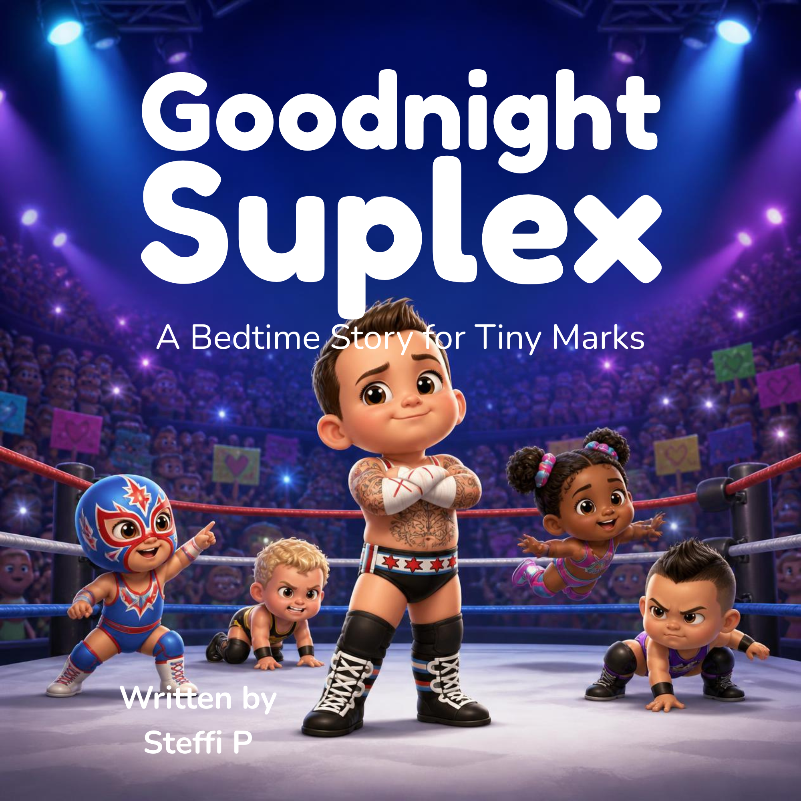
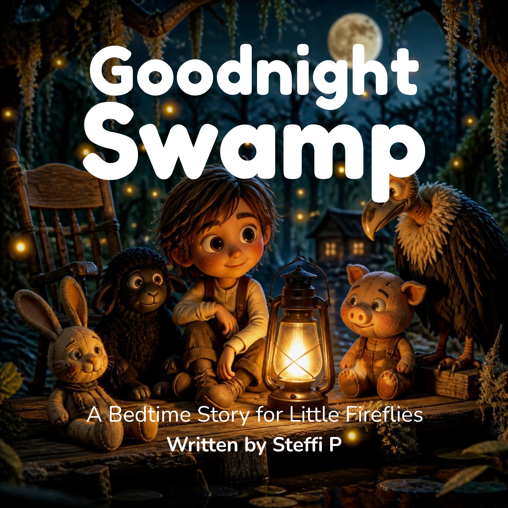
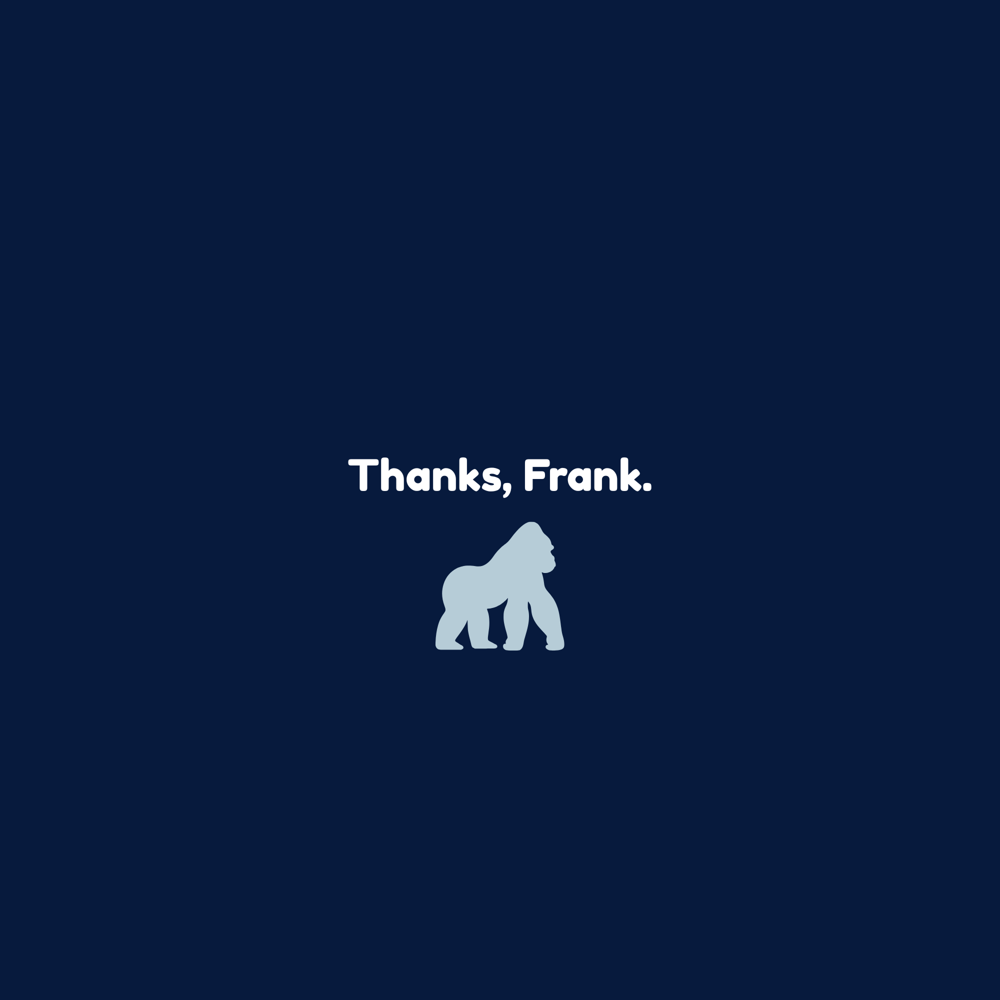
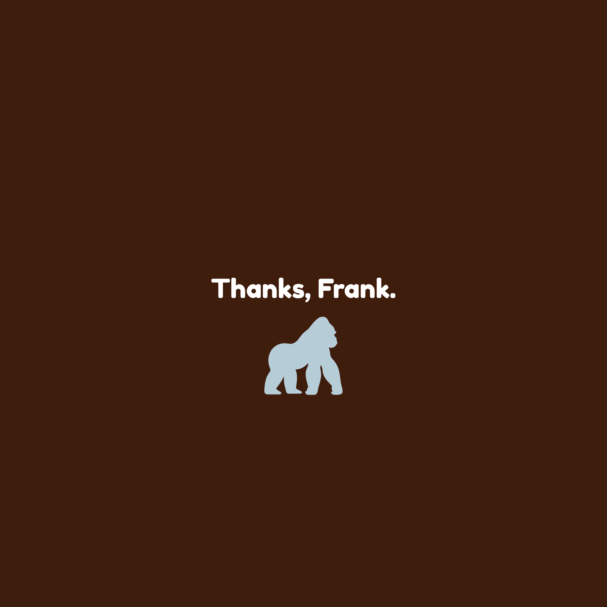
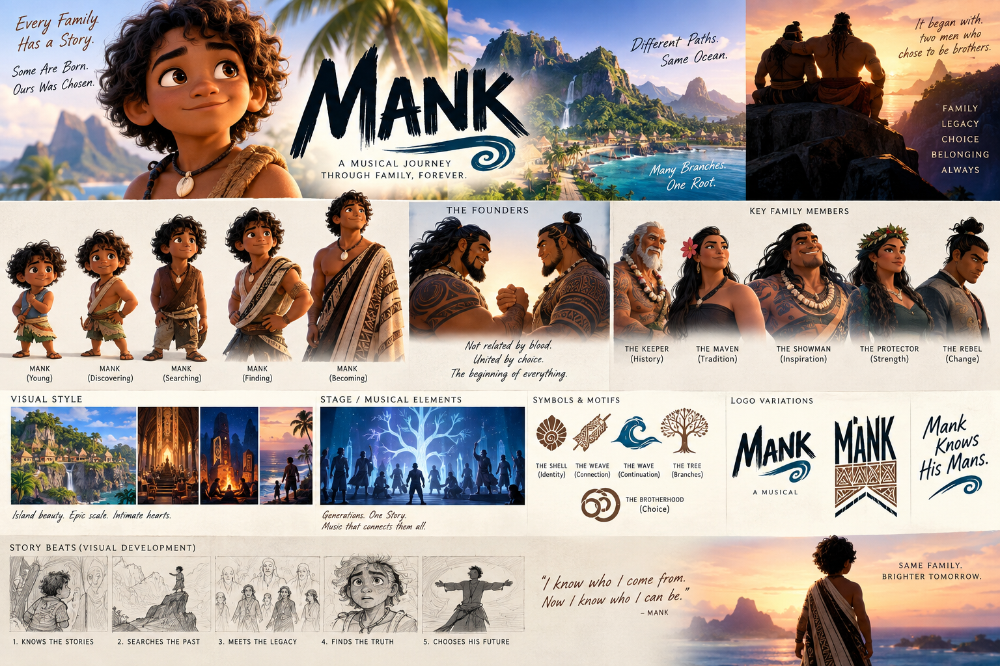
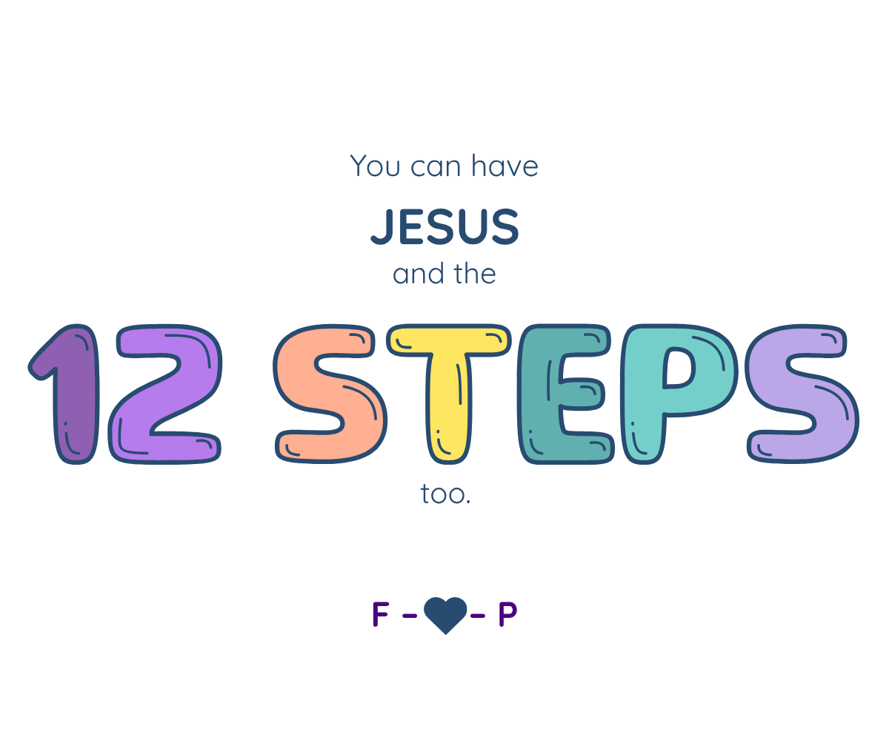
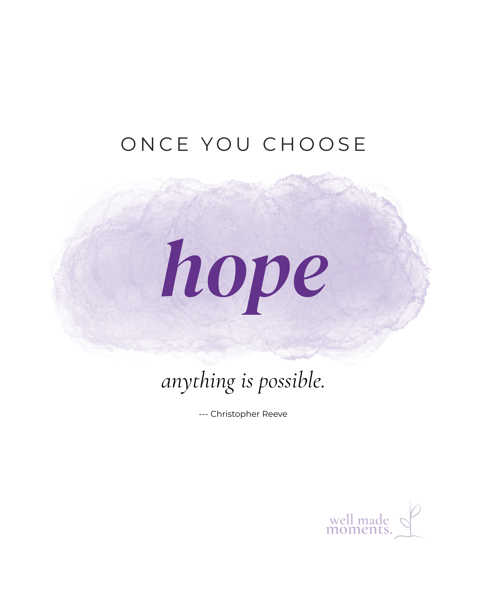

Selected work across scripts, children’s storytelling, original musical development, character systems, advocacy concepts, and brand creative direction.
Completed writing sample · Children's comic
The Great Glue Disaster
A three-page, 12-panel comic script for readers ages 5–8. Charlie's well-intentioned attempts to fix a problem become a bigger mess. The sample pairs visual comedy with social-emotional themes of empathy, honesty, and accountability.
Developed as a speculative writing sample for an Upwork opportunity; not represented as a commissioned publication.
Developed narrative sample · Speculative competition
Trust Issues
An ensemble reality-competition simulation built around established public personas, franchise histories, alliances, and behavioral prediction. The portfolio document includes concept architecture and the screenplay-style scene The Archivist.
Independent speculative creative work; unaffiliated with the referenced programs and personalities.
In development · Animated comedy
Aquatic Entertainment Universe
An animated entertainment-industry mockumentary about Charlie Seahorse and the employees of his talent agency. Celebrity aquatic performers populate their professional world; the agency workers are the recurring ensemble.
Ornithological wordplay developed into a distinctive stationery brand, including collection architecture, approved design directions, and cross-product applications. Includes approved Rockin’ Robin and Weird Owl mockups, a seven-color product system, and selected stationery concepts.
Narrative writing · Illustrated concept development
Children’s storytelling
Board-book concepts and storyboards demonstrate rhyme, visual pacing, scene progression, and adaptation for young audiences. The wrestling titles are unofficial fan concepts and are not presented as publishable, licensed works.
Unofficial wrestling board-book concept
Goodnight Suplex

A wrestling-themed bedtime board-book concept featuring familiar performance motifs and a playful contrast between ring spectacle and bedtime calm.
Unofficial wrestling board-book concept
Goodnight Swamp

A bedtime story concept spanning three eras of Bray Wyatt’s fictional universe, framed through JoJo’s storytelling.

Goodnight Suplex — storyboard sample

Goodnight Swamp — storyboard sample
An original, non-franchise Goodnight book is a future creative goal, not a completed manuscript.
Original musical · Concept pitch
MANK: A Musical Journey Through Family, Forever
An original stage-musical concept exploring chosen family, identity, belonging, and legacy. The visual pitch board organizes the protagonist’s life stages, principal characters, story beats, motifs, and staging direction. Presented as concept development rather than a produced theatrical work.

MANK — visual concept and story-development board
Campaign concepts · Message-led creative work
Writing with a point of view
Faith-centered message design
Faith Works Better With People (FWBWP)

A values-led creative concept exploring the relationship between faith, compassion, education, and community. Portfolio images represent concept mockups, not a commercial launch.
Public-health communication concepts
Overdose Awareness Quotes

A series of message-led visual concepts concerning overdose awareness. Demonstrates concise, sensitive messaging for a serious subject.